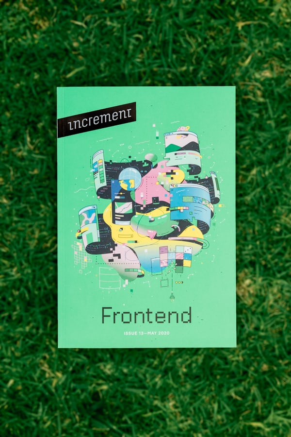

사실 프론트엔드가 가장 나랑 잘 맞는 거 같다. 물론 아직 해보지는 않았지만 기획이나 디자인을 좋아하는 나의 적성에 잘 맞을 거라고 생각했다.
하지만 찾아본 결과 프론트엔드는 새롭게 부상하는 대체 사이트로 인 설 자리가 적어지는 중인 동시에 애초부터 네임드 위주의 박봉직이라고 한다.
역시 재미와 수익은 반비례하는 걸까..아무튼 고스펙 시대에 개발자는 풀스텍이 기본이라는 말에 프론트엔드 전문은 아니지만 그렇다고 놓지도 못하는
이상한 개발자를 준비하게 되었다.
html, css, javascript를 배우는 중에도 포토샵과 일러스트 실력을 연마하면서 그 기록을 남길 생각이다.
현재는 유튜브 생활코딩과 굿잡 아카데미에서 프론트엔드 프로그래밍 언어를 공부할 준비 중이다.
국비지원교육이라 점점 사용이 줄어드는 추세인 JQuery를 배운다는 점이
조금 걱정스럽긴 하지만 그래도 독학보다는 낫지 않을까라는 생각에 시간과 비용을 투자해보도록 하겠다.
헛된 투자가 아니도록 '학'에서 그치지 말고
'습'을 너머 자유자재로 활용할 수 있도록 공부하자.
생존이 걸린 문제다. 후회 없도록 노력하자!
